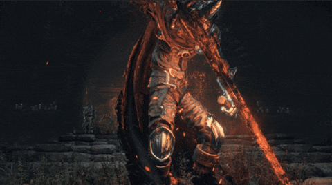
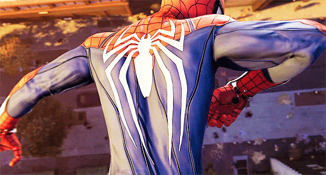

Dark Souls 3
A lot of people think souls games are some of the hardest games ever...and they are! But the satisfaction you get after beating it is unmatched!

Call of Duty Black Ops 2
Yes I prefer the 'older' call of duty games! I still remember getting Black Ops 2 for Christmas when I was younger like it was yesterday!
Marvels Spider-Man
Welp, I think you can probably guess who my favorite hero is :p -- but the immersion in this game is so satisfying and makes it infinitely replayable!
